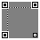
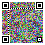
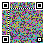

01 / Optical representation
Two images. One difference.
TM4 and TM8 use temporal differential modulation. Each optical frame is displayed as two alternating subframes: R, a neutral reference, and P, a payload image. The receiver reads the difference Δ = P − R.
Both modes use a 41 × 41 module grid with black-and-white positioning markers, an alignment target and colour pilots. In the temporal layout, 1,398 modules carry data. The structure stays fixed while the data modules change.


These test patterns are rendered by OptiRelay’s optical implementation. They illustrate the channel; this page is not transmitting a file.
02 / Robust first contact
TM4: four data directions.
TM4 encodes 2 bits per data module using four colour directions around a neutral grey. Each pair of data directions differs on two RGB channels, giving the receiver more separation when a channel is weak.
Pairing uses TM4 for the initial and response codes. Its optical representation carries up to 349 encoded bytes per reference/payload pair, including protocol overhead.

03 / More data per pair
TM8: eight data directions.
TM8 encodes 3 bits per data module using the eight RGB directions around the same neutral grey. Its optical representation carries up to 524 encoded bytes per reference/payload pair, including protocol overhead.
The extra bit increases the information density. It does not imply a fixed transfer speed: the effective rate depends on display timing, camera capture and the number of usable pairs.
| Property | TM4 | TM8 |
|---|---|---|
| Data directions | 4 | 8 |
| Bits per data module per pair | 2 | 3 |
| Encoded byte capacity per pair | 349 | 524 |
| Wire codec | COLOR_4 | COLOR_8 |
| Pairing | Used for initial contact | Data mode after pairing |
The 16 pilot modules sample all eight RGB directions in both modes. The four/eight distinction describes the data modules, not the total number of colours visible in a test pattern.
04 / From file to file
A transfer session.
Prepare
The sender creates a random 16-byte session identifier, prepares the data stream and computes its SHA-256 digest. Compression is applied when enabled and useful.
Pair
The receiver reads an initialisation code in TM4. When both devices have a camera, they exchange ephemeral public keys through an optical response code. A shared-phrase path is available when the sender has no camera.
Compare
Both devices display a six-digit short authentication string. Users compare and confirm it before data transfer; encryption alone does not authenticate the other device.
Transmit
The sender cycles through data frames. The receiver reads reference/payload pairs, corrects recoverable errors and gathers enough fountain symbols to reconstruct each block.
Verify
The receiver checks the reconstructed stream against the announced SHA-256 digest, decompresses it when necessary and makes the resulting file available.
05 / Binary envelope
One frame, two layers.
TM4 and TM8 change the optical representation, while keeping the ORP v0.1 binary frame format. Multibyte integers use big-endian order.
3 × metadata + Reed–Solomon protected body| Part | Size | Purpose |
|---|---|---|
| Metadata | 3 × 8 bytes | Magic, version, codec, flags and symbol count. The receiver votes across the three copies. |
| Body header | 14 bytes | Session token, block index, source-symbol count and fountain seed. |
| Payload | 1–4 × 96 bytes | Fountain symbols; the allowed count depends on the codec. |
| Authentication tag | 16 bytes when encrypted | AES-GCM authentication of the encrypted payload and associated headers. |
| CRC-32 | 4 bytes | Detection of corruption in the body. |
| RS parity | 8 bytes per chunk | Each body chunk contains at most 247 bytes before parity is added. |
06 / An imperfect optical channel
Recover errors. Replace losses.
Reed–Solomon parity corrects up to four byte errors per protected chunk. Frames that cannot be recovered are treated as losses. Fountain coding lets later symbols contribute to reconstruction without requiring the exact missing frame to be sent again.
The temporal decoder locates each subframe separately, estimates a perspective transform and normalises its colour response. It rejects mixed reference/payload captures caused by a camera reading across a screen transition. Multiple usable pairs can be accumulated before the final decision.
07 / Session keys and file integrity
Authenticate the session.
Check the result.
The reference implementation uses ephemeral ECDH P-256 keys, HKDF-SHA-256 key derivation and AES-256-GCM authenticated encryption. The six-digit comparison connects the cryptographic exchange to the device the user intends to pair with.
Session identifiers separate transfers. Repeated block/seed pairs are ignored. A final SHA-256 check covers the transferred stream, after optional compression and before decompression at the receiver.
08 / Test on your devices
Measure the actual channel.
TM4 and TM8 are experimental temporal representations available in the test bench. Camera exposure, display refresh, motion, distance and reflections affect reception. Keep the full matrix and its quiet zone in view.
The v0.1 sender repeats frames without a receiver acknowledgement channel. It does not automatically know when reception is complete. The lab exposes the receiving state so you can observe the result on your own devices.
Try TM4 and TM8